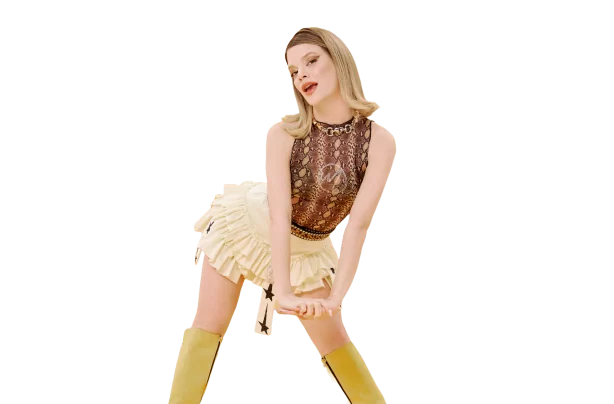
Esin Bahat
Sarı · Ana Dansçı
Sahneye çıktığı an atmosferi değiştirir. Duygusal derinliği ve sahne hakimiyetiyle her performansa iz bırakır.
Altı Kız · Bir Enerji
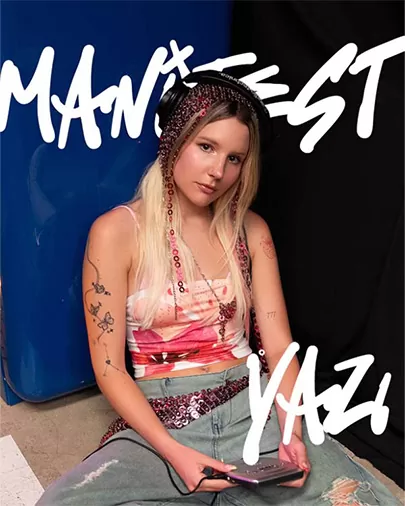
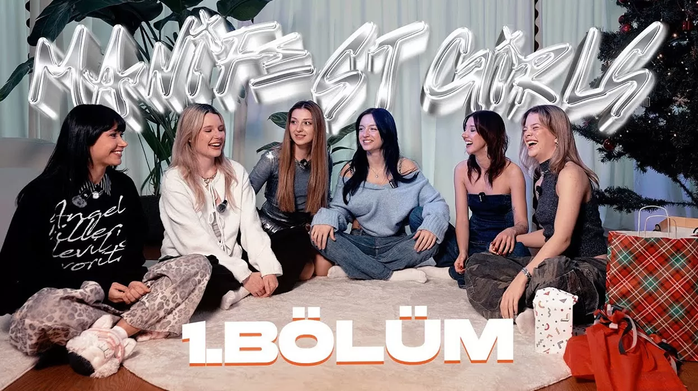
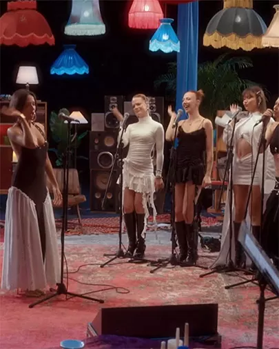
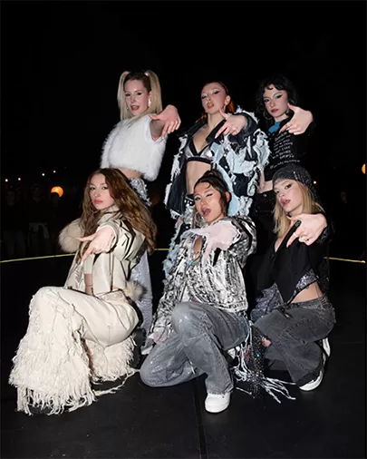
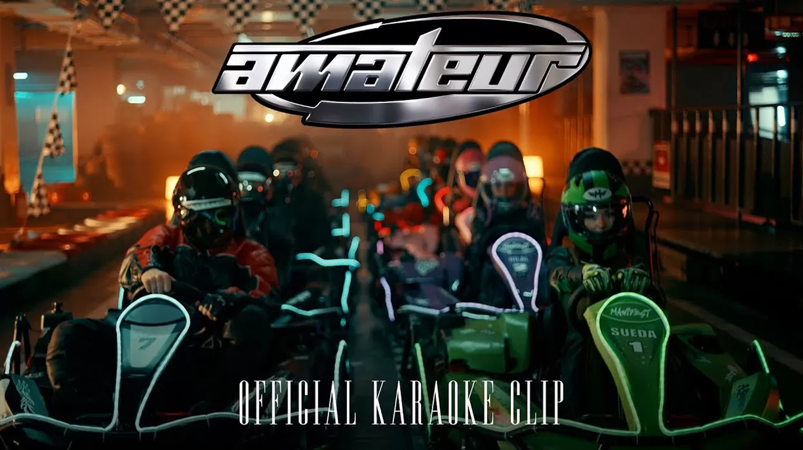
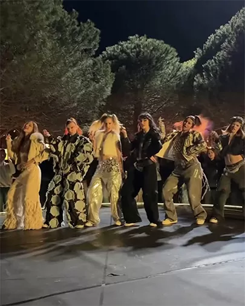
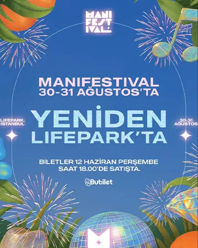
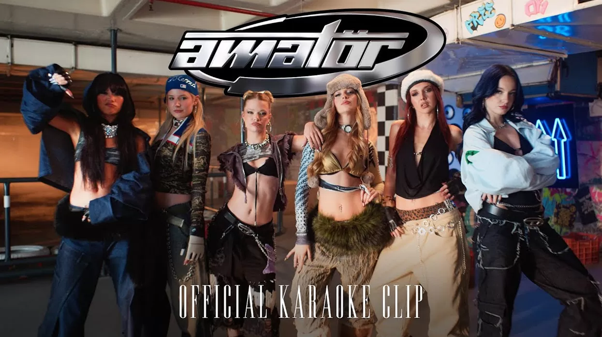
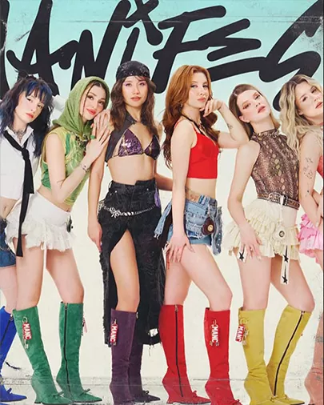
Her şey Big5 Türkiye sahnesinde başladı. Binlerce yetenek arasından öne çıkan altı genç kadın — Esin, Hilal, Lidya, Mina, Sueda ve Zeynep — önce rakip, sonra dost, en sonunda tek bir kalp oldular.
Bugün Manifest; modern pop sound’u, güçlü sahne enerjisi ve durdurulamaz kadın gücüyle Türkiye’nin en büyük kız grubu olarak kendi evrenini adım adım inşa ediyor.
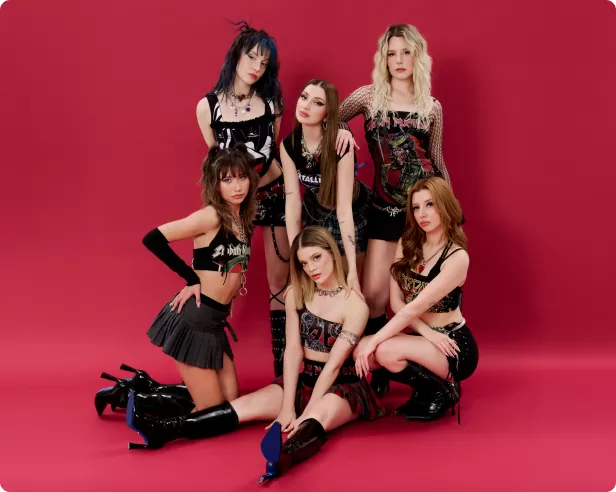
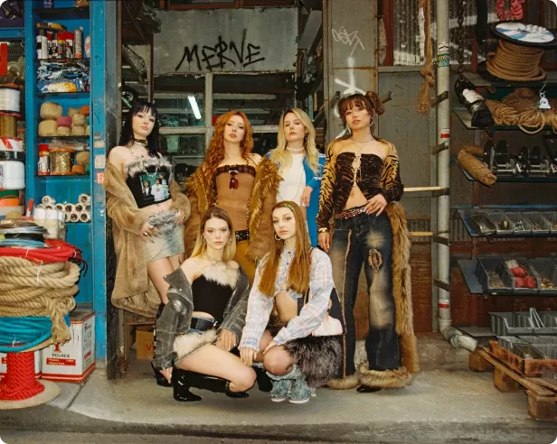
Televizyonda milyonların izlediği yarışmada altı yetenek sahneye çıktı ve kaderleri kesişti.
Rakipler dosta, dostlar aileye dönüştü. Altı ses tek bir isim altında birleşti: Manifest.
“Zamansızdık” ve “Arıyo” ile listeleri sarstılar; sosyal medyada bir fenomen doğdu.
Debut albüm ve deluxe sürümü yayında. Sıradaki durak: sahneler, turneler ve dünya.
Debut albümümüz Manifestival ve tüm single’larımız Spotify, Apple Music ve YouTube’da seni bekliyor.
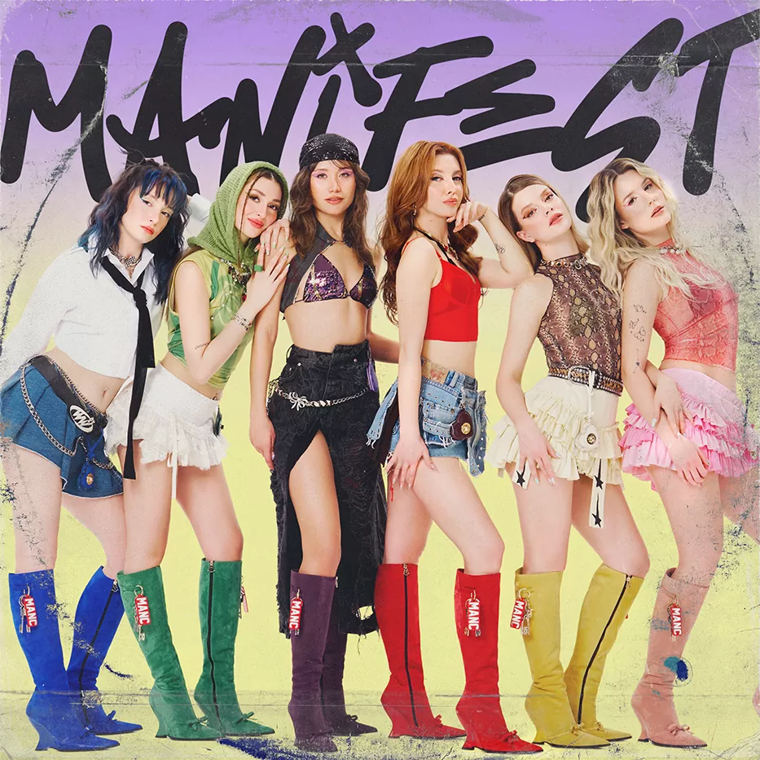
Altı sesin tek bir enerjide buluştuğu ilk albümümüz. Pop, dans ve saf duygunun manifestosu — baştan sona bir festival. Deluxe sürümüyle birlikte şimdi tüm platformlarda.
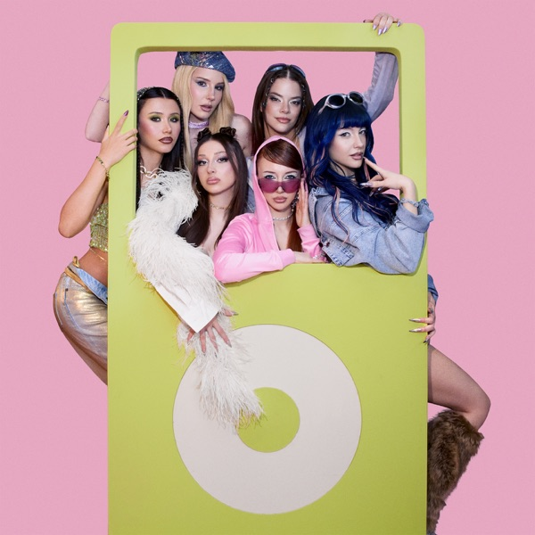
Yeni Toz PembeYeni Single · 2026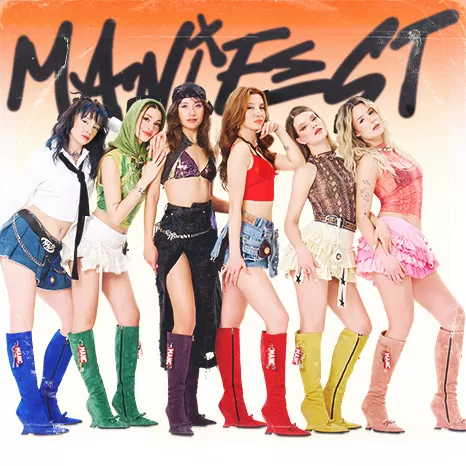
Manifestival (Deluxe)Albüm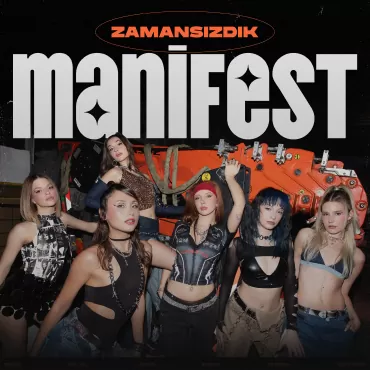
ZamansızdıkSingle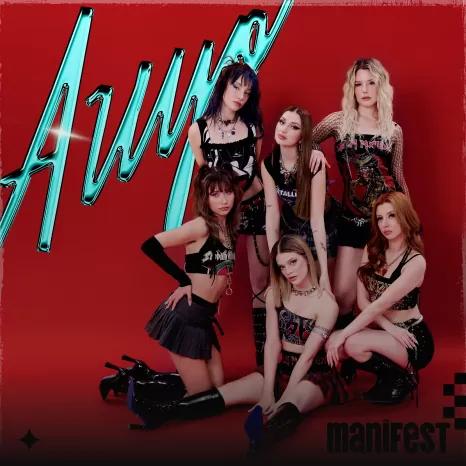
ArıyoSingle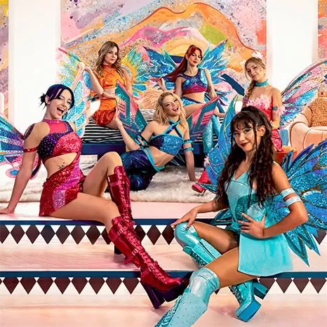
RüyaSingle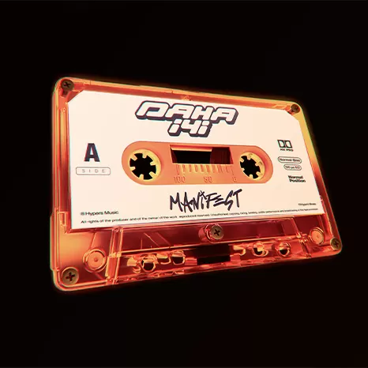
Daha İyiSingle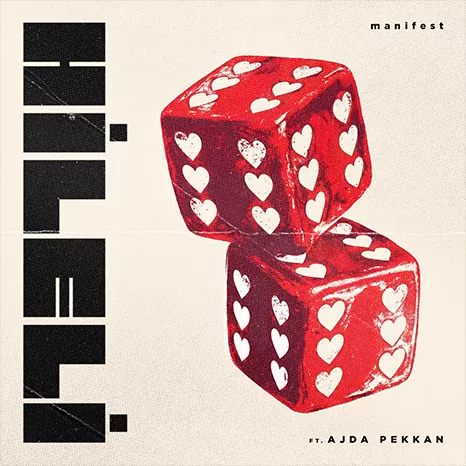
HileliSingle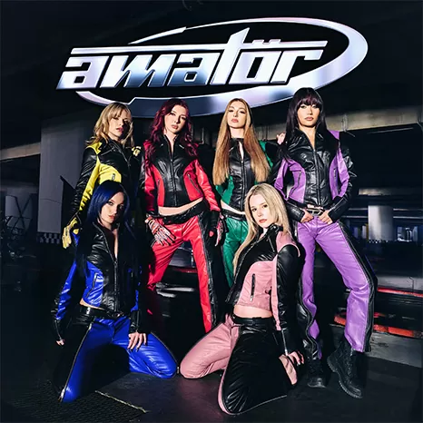
AmatörSingle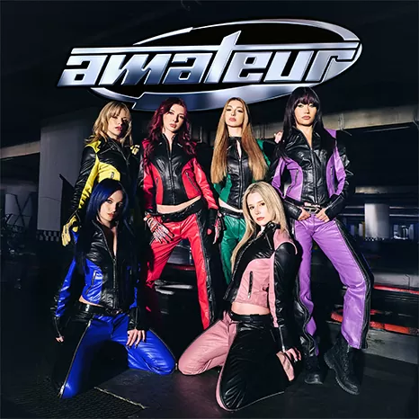
AmateurSingle · English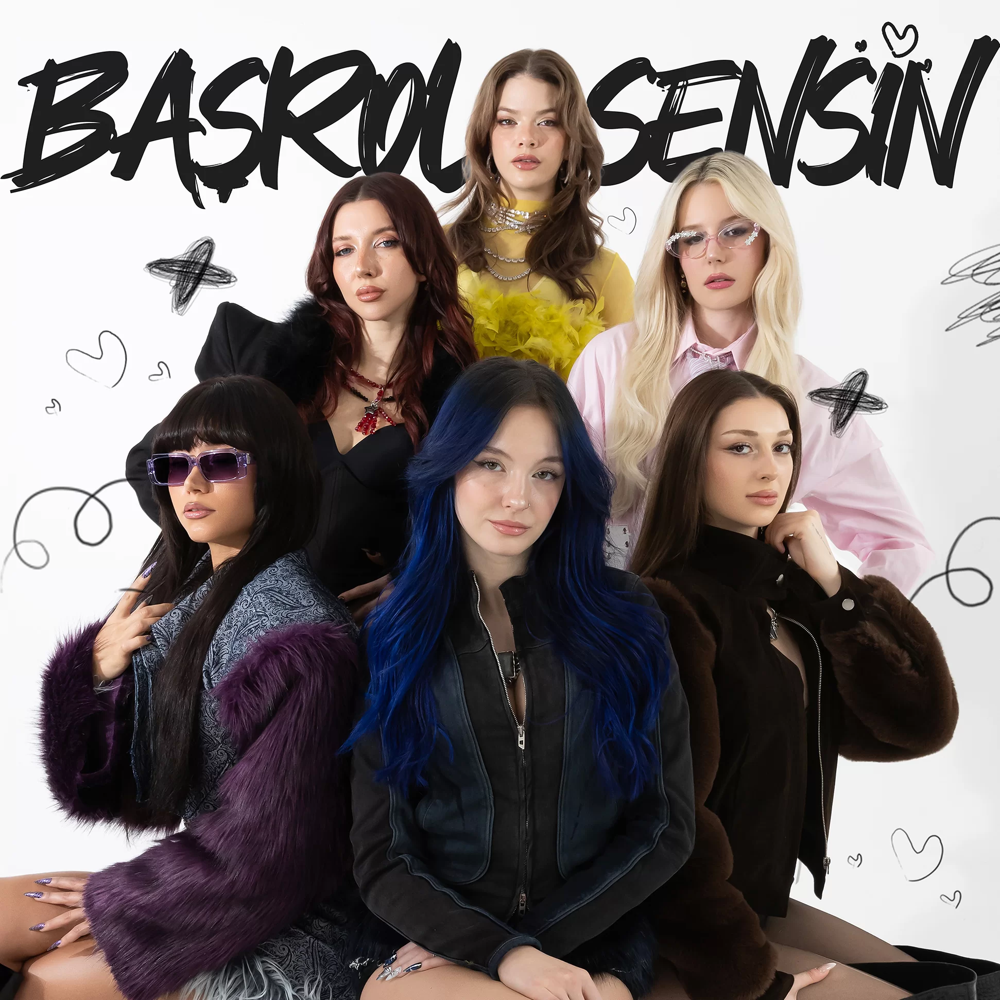
Başrol Sensin1. Yıl Özel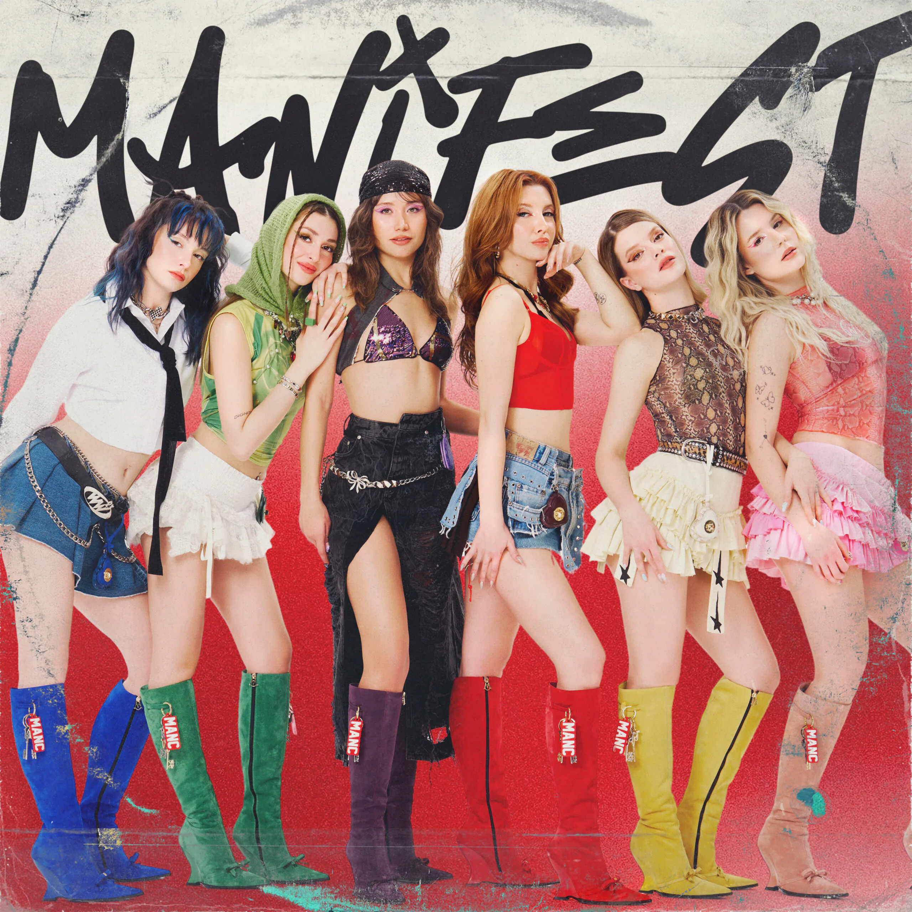
Zehir (Remix)Arem & Arman Tüm şarkılar Spotify’da dinle →Sarı, mor, pembe, kırmızı, yeşil ve mavi — altı renk birleşince beyaz eder. Kartın üzerine gel: kart 3 boyutlu eğilir, üyenin rengi yanar ve “Toz Pembe” çalmaya başlar. Rozette her üyenin şarkıda gerçekten söylediği saniyeler yazar. 🎧

Sahneye çıktığı an atmosferi değiştirir. Duygusal derinliği ve sahne hakimiyetiyle her performansa iz bırakır.
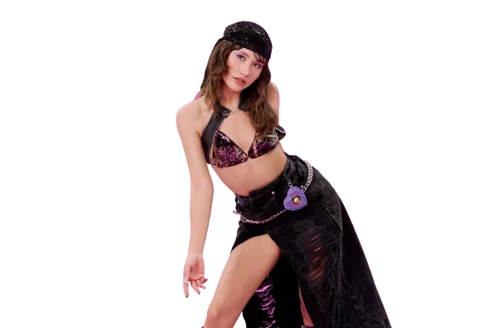
Tam bir fırtına. Kalbe dokunan vokalleri ve tavizsiz enerjisiyle dinleyeni ilk saniyeden yakalar.
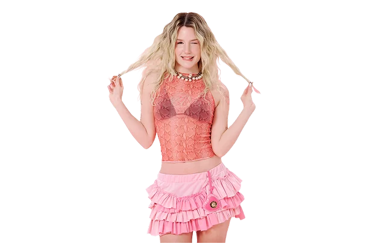
Zarafetle gücü aynı bedende buluşturur. Her hareketi estetik, her notası kararlılık dolu.
Korkusuz ve güçlü. Sınırları zorlayan performanslarıyla sahnenin ateşini her zaman yüksek tutar.
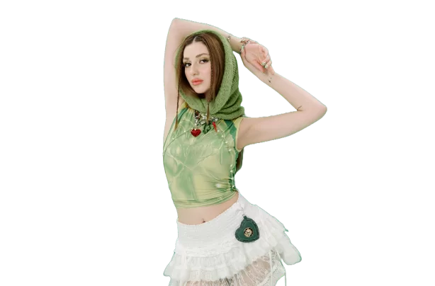
Saf enerji. Sınır tanımayan ruhu ve bulaşıcı neşesiyle grubun kalp atışını hızlandırır.
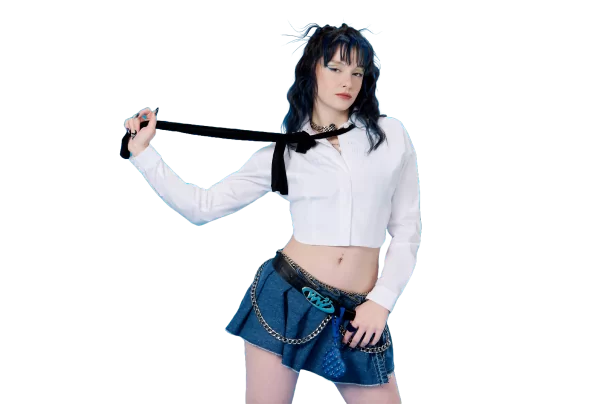
Sakin özgüveni ve sarsılmaz enerjisiyle grubun dengesini kurar; sessiz ama derin bir güç.
* Rozetteki zaman aralıkları, üyelerin “Toz Pembe”de söylediği anlardır. Kartlarda çalan ses, iTunes’un 30 sn’lik resmî önizlemesidir (şarkının ~0:48–1:18 aralığı; telif nedeniyle tam parçayı barındırmıyoruz). Bu pencere Sueda (0:48–1:04) ve Esin (1:05–1:18) ile birebir örtüştüğü için o iki kartta kendi gerçek anları duyulur; diğer üyelerin kartında da aynı önizleme çalar, kendi anlarını tam şarkıda (“Tam şarkı ↗”) dinleyebilirsin.
Klipler, canlı performanslar ve kamera arkası — hepsi YouTube kanalımızda.
Big5 sahnesinden çıkışından bu yana Manifest’in kırdığı rekorlar ve kazandığı ödüller.
“En Güçlü Yükselen Grup” — 8. PowerTürk Müzik Ödülleri’nde yılın çıkışı seçildi.PowerTürk Müzik Ödülleri · 2026
“Yılın En Başarılı Çıkış Yapan Grubu” ödülüyle daha ilk yılında sahneye damga vurdu.No7 Influencer Awards · 2025
“Yılın Müzik Grubu” ve “Zamansızdık” ile en iyi single ödülünü aldı.Kristal Geyik Ödülleri · 2025
Manifestival albümünün 11 şarkısı da 24 saat içinde Spotify Türkiye Top 100’e girdi.Spotify Türkiye
Manifestival, 2025’in dünyada en çok dinlenen 3. kız grubu albümü oldu.Küresel Stream Sıralaması
YouTube Music ve Spotify’da toplam 480 milyonu aşan dinlenme.480M+ Stream
Her platformda @m6nifestgirls — kamera arkası, canlı yayınlar ve daha fazlası.